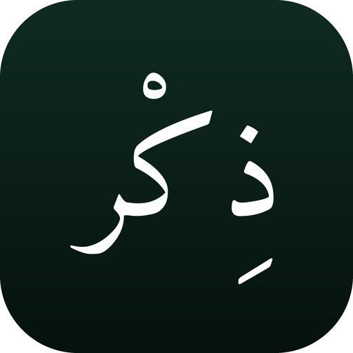

Arabic remembrance and hadith, published as YouTube Shorts.
This is a small open-source program that renders short Arabic religious texts as vertical videos and uploads them to its own owner's YouTube channels on a daily schedule. It runs unattended on GitHub Actions. There is no website to sign into, no account to create, and no service offered to anyone else — it is one person's publishing tool, and this page exists so that the Google OAuth consent screen has somewhere honest to point.
The only Google account involved is the channel owner's own. The bot requests two OAuth scopes and uses them for exactly one thing each:
youtube.upload — uploads a video to the channel that
authorized it. Every upload lands as private; a human reviews
it and publishes it by hand.
youtube.readonly — read once per run, to check that the
stored credentials belong to the channel the run intends to publish to.
Two channels share this codebase, and this is the check that stops one
channel's video from being uploaded to the other.
The adkar come from Hisn al-Muslim; the hadith from Sahih al-Bukhari and Sahih Muslim. Each video carries its source and reference in the description. A hadith is only ever shortened where the text itself states that the Prophet spoke, and the cut begins at that phrase — everything else is reproduced in full, chain included.
The corpus has not been checked against a printed, scholarly-reviewed edition. This is an automated pipeline, so any error in the source text would be reproduced on every run. If you spot a mistake, please report it on the repository.
Contact: mobilestudio66@gmail.com